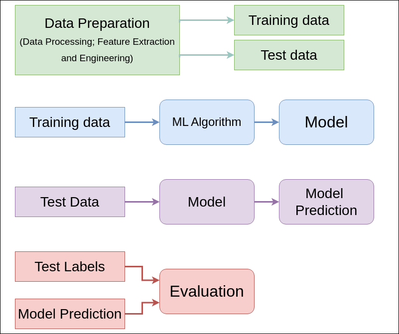

Keyboard shortcuts:
N/СпейсNext Slide
PPrevious Slide
OSlides Overview
ctrl+left clickZoom Element
If you want print version => add '
?print-pdf' at the end of slides URL (remove '#' fragment) and then print.
Like: https://wwwcourses.github.io/...CourseIntro.html?print-pdf
Supervised Learning: Basic Concepts
Created for

Iva E. Popova, 2024,

Supervised Learning Overview
- Supervised learning is a type of machine learning where the model is trained on labeled data.
- Each instance in the dataset is represented by a set of features and a specific target attribute.
- For example, in a dataset predicting house prices, an instance might be a specific house with its associated features (e.g., number of bedrooms, square footage) and the target price.
- The features, also known as predictors or independent variables (X), are the input variables used to make predictions.
- The target, also called the dependent variable or outcome (Y), is the output variable that the model aims to predict.
- In summary, we have historical data with input-output pairs, where each input is mapped to a corresponding output.
Introduction
{kind=link}
The Goal
- The goal of supervised learning is to approximate a mapping function (g) that accurately maps input variables (X) to output (target) variables (Y).
- This can be represented mathematically as:
- The task of the modeling algorithm is to find the best possible mapping function - $g$, that minimizes the difference (error) between the predicted values and the actual values.
- This involves training the model on the labeled data, where the input features (X) are associated with known outputs (Y), and adjusting the model parameters to achieve the lowest prediction error.
- Example:
-
Consider a dataset where we want to predict house prices. Each instance (data point) in the dataset includes features such as the number of bedrooms, square footage, and location (X) and the corresponding house price (y). The goal of the supervised learning algorithm is to find a function g that can predict the house price based on these features with minimal error.
$$ {g: X \to Y} $$
{kind=link}
Problems that solves
- Two main problems categories:
- classification
- Predicting a discrete label for an input.
- Example: determining if an email is spam or not
- Regression
- Predicting a continuous value for an input.
- Example: predict the price of a house
Supervised Learning Process
Supervised Learning Process
Supervised Learning Process - diagram
- The supervised learning process can be summarized in the following steps: 
Supervised Learning Process - the steps
- Data Preparation
- Before training the model, the data must be prepared. This includes cleaning the data, handling missing values, encoding categorical variables, normalizing or standardizing features, and splitting the data into training and test sets.
- Model Training
- The training data and training labels are fed into a machine learning algorithm to train a model. The model learns to map the input variables (X) to the output variables (y).
- Testing
- After the model is trained, it is tested on new, unseen data called test data. This data is used to make predictions and is not part of the training set.
- The trained model makes predictions on the test data, providing output values based on the input features.
- Evaluation
- The predictions made by the model are compared to the test labels to evaluate the model's accuracy and performance. This evaluation helps to determine how well the model generalizes to new data.
- You can use this ML_Process_Template.ipynb for a starting point.
Key Concepts
- 1. Training Data
- The labeled data used to train the model.
- 2. Test Data
- The labeled data used to evaluate the model.
- 3. Features
- The input variables used to make predictions.
- 4. Labels
- The output variable the model is trying to predict.
- 5. Overfitting
- When a model performs well on training data but poorly on test data.
- 6. Underfitting
- When a model performs poorly on both training and test data.
Common Algorithms
- 1. Linear Regression
- Used for regression tasks.
- 2. Logistic Regression
- Used for binary classification tasks.
- 3. Decision Trees
- Used for both classification and regression tasks.
- 4. Support Vector Machines
- Used for classification tasks.
- 5. Neural Networks
- Used for both classification and regression tasks.
Evaluation Metrics
- 1. Accuracy
- Proportion of correct predictions in classification.
- 2. Precision
- Proportion of true positive predictions in classification.
- 3. Recall
- Proportion of actual positives correctly identified in classification.
- 4. F1 Score
- Harmonic mean of precision and recall in classification.
- 5. Mean Squared Error
- Average squared difference between actual and predicted values in regression.
- 6. R-squared
- Proportion of variance explained by the model in regression.
The Math behind
The Math behind
- Given is a set of ${N}$ training data of the form:
$$ {(x_{1},y_{1}),...,(x_{N},\;y_{N})} $$
- Where ${x_{i}}$ is the input (feature) vector
- All Supervised Learning algorithms seeks a function:
$$ {g:X\to Y} $$
- Where
- ${X}$ is the input (feature) space
- ${Y}$ is the output (target) space
- ${g} \in {G}$, ${G}$ represents the hypothesis space (see What exactly is a hypothesis space in the context of Machine Learning?)
- Example:
-
For a house price prediction model:
- ${X}$ could be features like size, location, and number of bedrooms.
- ${Y}$ would be the house price.
- ${g}$ would be the function that maps the features to the predicted price.
In simple words
- Imagine you have a smart robot, and you want to teach it to do something, like recognizing pictures of cats and dogs.
- Function $ {g:X\to Y} $
- X (Input Space): This is like the robot's eyes. It's all the pictures (features) you show to the robot. Each picture is an input.
- Y (Output Space): This is like the robot's brain. It's where the robot decides whether a picture is of a cat or a dog (target).
- So, the robot learns a rule (function) that takes a picture (from X) and tells you if it's a cat or a dog (in Y).
- Hypothesis Space: $G$, $g∈G$
- Think of G as a big box of different rules (hypotheses) the robot can learn. Each rule (g) is a way to decide if a picture is of a cat or a dog.
- The goal is to find the best rule (g) from this big box (G) that helps the robot make the right decisions most of the time.
Loss function
- In order to measure how well a function fits the training data, the loss function is defined:
$$L: Y \times Y \to \Bbb{R} ^{\ge 0}$$
- I.e. if we have the training samples ${(x_{i},\;y_{i})}$, then the the loss of predicting the value ${{\hat {y}}}$ is ${L(y_i,\hat{y})}$.
- Usually, in the same context, is used the term cost function, which can be regarded as a generalization of the lost function
In simple words
- Loss Function
- When we're teaching our robot to recognize cats and dogs, we need a way to measure how good or bad it is at making predictions. This is where the loss function comes in.
- What is a Loss Function?
- Loss Function (L): Think of this as a report card for the robot. It tells us how far off the robot's guesses are from the actual answers.
- Formula: $L:Y×Y→R≥0$. This means the loss function takes two things (the actual answer and the robot's guess) and gives us a number (the loss). This number is always zero or positive.
- How Does it Work?
- Training Samples: We have pairs of inputs and correct answers, like ($x_{i}$, $y_{i}$). For example, $x_{i}$ is a picture, and $y_{i}$ is the correct answer (cat or dog).
- Prediction: The robot makes a guess, $\hat {y}$, based on the picture.
- Calculating Loss: The loss function compares the robot's guess ($\hat {y}$) with the actual answer ($y_{i}$) and gives us a loss value, L($y_{i}$, $\hat {y}$). If the guess is very close to the actual answer, the loss is small. If the guess is far off, the loss is large.
- Cost Function
- Cost Function: This is like an overall score for the robot, considering all the training samples. It can be thought of as a summary of how well the robot is doing overall.
- Generalization: The cost function often averages or sums up the loss over all training samples to give a big picture view of performance.
Important Concepts
Important Concepts
Feature Selection
- Features are chosen with a specific task in mind
- Curse of Dimensionality: The more features you include, the more data you need (exponentially) to produce an equally accurate model
No Free Lunch' theorem
- 'No Free Lunch' theorem: "If an algorithm performs better than random search on some class of problems then it must perform worse than random search on the remaining problems".
Generalization
- The ability of algorithm to perform well on new (not-seeing before) data
Overfitting and Underfitting
- Overfitting happens when a model learns all the detail (and noise) in the training data to the extent that it negatively impacts the performance of the model on new data.
- Underfitting is the case where the model has "not learned enough", resulting in low generalization and unreliable predictions.
- Overfitting and underfitting are the two biggest causes for poor performance of machine learning algorithms
Overfitting vs Underfitting